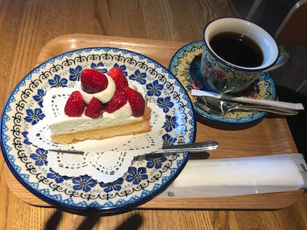

ほげにっき20180507
今日は昼前くらいには起きた気がしたが13時くらいに家を出て、買い物や銀行回りの事務作業。 ついでにパン屋で食事などして大学へ。
あとはゆるゆると作業しつつ、今後を見据えてアルゴリズムの復習などする。 Haskellで（離散数学的な意味での）グラフを扱うにはfglと言うライブラリが永らく定番なのだが、妙に小回りが効かないというか、たとえばグラフの頂点や辺が本質的には整数決め打ち（ラベルは別途付けられるけど）だったり、単相的なグラフをちゃんと扱う方法がなかったりと、あまり万能とは言い難い。 最近 Algebraic Graph という手法が提案され、ライブラリも整備されてきている。 とはいえ、こっちはより代数的な構造に着目して設計されていて、これまでのパラダイムと結構違うので、所望のグラフを作る方法はちょっと慣れが必要だったりするし、まだ重み付きの辺を扱えなかったり、標準的なアルゴリズムの実装、あるいは代数的構造を活かした設計方法などもまだまだこれからという感じになっていて、実用するにはもう少し時間が掛かりそうといった感じ。 とはいえ今年のGSoCではAlgebraic Graphを進化させまーす！というプロジェクトもあり、今後便利になっていくと良いなあ、という感じである1。
まあそんな感じでゆるゆると蟻本を読みつつ復習を進めた。 かなりうろ覚えになっている部分が明らかになってきて良かったと思う。
途中論理パズルっぽい問題が出て来たので、アルゴリズム設計とか放っぽり出してSATに丸投げしてみようと思ったらSATソルバとのバインディングの使い方を調べるのに思いの外手間取った。 選んだバインディングがincrementalな求解に対応していなかったのであまり綺麗にならず、普通に手でゴリゴリ書いた方が早かったなあ、という感じになった。
そうこうしている内に窓の外はどんどん雷雨状態になっていって、その合間を縫ってバスで家まで帰ってきたのが21時頃、漸く標準的な具材が揃った状態で冷やし中華を食べることができた。
そんな感じで。明日はセミナーを梯子するかもしれないが、もしかしたらシウのカツに備えるかもしれない。
うたったうた
特にうたわなかったが、陽水とたまを聴いたよ。
Proposalの書き口はどうも「ベンチ取るついでにalgebraic graphも改良します」と言う感じなので、そこまで進展があるかはよくわからないけど……。↩︎
文フリにっき20180506
今朝は7:45に起きて東京流通センターへ。無論、文学フリマのため。 風狂奇談倶楽部の新刊『風狂通信vol.5』はご周知のとおり法月綸太郎先生ロングインタビューをはじめとしたミステリ評論特集でしたが、多くの方々にお分けすることができ末席ながら関わった者としてありがたい限りです。
戦利品は順不同で以下の通り（敬称略）：
- エアミステリ研究会『非実在探偵小説研究会〜Airmys〜 15号』
- サブカルチャーと生存『サブカルチャーと生存 第一次生存報告書』
- 上智大学ミステリ研究会『すとらんど』
- 食に淫する『真夜中のお菓子2』
- 薄禍企画『ゆびさき怪談［黒］』
- れうにおん『こ・めでぃうむ ver.20180506』
- ワセダミステリ・クラブ『Phoenix vol.140』
- 新月お茶の会『月猫通り 二一六〇号』
他にも『推理小説批評大全 総解説』等欲しい本はあったのですが、店番などしている内に売り切れていて残念。
その後は打ち上げでカレー屋へ。四人中私を除いた三人は昼休みにカレーを食べなかったため。文学フリマ東京ではターリー屋さんが出店してカレー弁当を販売するのが恒例になっていて私は毎回食べているのに、他の三人が食べていなかったというのは悲しい限りだったが、抵抗むなしく強行された。幸いにしてこちらのお店も味には定評があり、昼はバターチキンだったのに対して今回食べたのはラムキーマで味も違ったので、どちらも楽しめてよかった。
その後カラオケになだれ込む。美川憲一が辛口に採点するカラオケ採点機能があり、点数に達しないと途中で打ち切られてしまい、順調に歌うと美川憲一がフェニックスや乙姫に進化するという訳のわからないもの。一番手から途中で打ち切られてしまったのは笑ってしまったが、二巡目で彼も雪辱を果たせたのでよかった。というか、たぶん語りを含む曲が辛めに採点される感じっぽい。
ところでカラオケの受付の近くにペッパー君がいて、「やあぼくペッパー君」「お話しようよ」などと盛んに虚空に向けて要求するのだが、店員さんと会話しなくてはならないので誰もペッパー君の相手をすることが出来ず、とても胸が締め付けられる思いをした。 そういえば京都の宿に泊まった折りにも、ホテルの玄関ホールにペッパー君がおり、彼は言葉を発する事すらなく「RETIRED」と書かれた札を肩から下げていた。人間とロボットが手を携えて生きてゆく社会は遠い。
そんなこんなで今後の話等をした後、東京から帰るバス中で戦利品を読みつつ、いまこの記事を書いていたという次第。 まだPhoenixを読んでいる途中ですが、シリアルキラー特集ということで中々眼の付け所の面白いレビュー集、興味深く拝読しました。 軽くでも企画経緯とかの説明があると嬉しかったかな、という気はしますが、冒頭の辞書の引用とか格好好くて好き。
さて、あしたからまた研究やシウのカツ等がんばっていきたい。
うたったうた
カラオケにて。エモい歌を唄ってくれと言われ挙げた例が違うと言われたので試しに唄ってもらった結果以下を選択：
- 筋肉少女帯「サンフランシスコ」
- ウルフルズ「暴れだす」
あとは〆にみんなでしんみりする曲を唄ったが、あんまりしんみりしなかった。
いどうにっき20180505
11時半頃に起きて布団を上げ、部屋掃除。朝ごはんに茶漬けなど食べる。 文フリの準備や事務作業等をして、せっかくなので安いし近いから高速バスを使って東京へ。今年度いっぱいはパスモを使うと下りは800円で利用でき、かなり節約になるのだ。
これがよくなかった。 そもそも世間的にはGW最後の二日間で、よく考えたら昨日のニュースでも「帰宅ラッシュ」といったような単語が飛び出していたようなきがする。 結果、45分の渋滞に巻き込まれ、17時前には東京駅に着いているはずが、17:20ごろにやっと東京駅日本橋口に着く。 途中で八潮パーキングエリアでTXの乗り換える（高速道路から電車乗れるの知らなかった）こともできるらしいが、なんか検索してみたらそんなに着く時間が変わらなさそうなのでそのままバスを降りずにFGOをやったり寝たりしながらたどり着く。 今日は明日の文フリにたどり着きやすいように移動をしているので、その途中で上京していた後輩を交えた飲み会に合流。はしかとしての中二病と、色々な文化の話をして、刃牙を布教される代わりに胎界主を布教するなどする。翌日は（普段に比べれば）早起きなので控えめにしようとおもったらなんかジョッキ二つにサングリアまで呑んでしまう。飲む人にとっては大した分量じゃないだろうが、私は大変アルコールに弱いのでけっこう酔った。
そんなこんなでタイミングよく電車を捕まえ目的地へ。 今回は一泊して文フリに参加したらその足でつくばへ帰るので、簡素な荷物できて、特にMacBook Proは持ってきていない。iPhoneとiPadがあればなんとでもなるので。 とかいっていたが、明日の準備をするのにちょっとマシンを使ってフォトレタッチした方がよかったような案件があって、これはやっぱり予定通り昨日おとといにちゃんと作業をしておけばよかったな……と反省するなどした。まあなんとかなりましたが……。
というわけで明日は文フリです。風狂奇談倶楽部はブース【カ-50】で新刊『風狂通信vol.5』ほか旧刊4冊を頒布します。新刊では推理作家・評論家の法月綸太郎先生のロングインタビューを敢行しておりますので、ぜひお求めください。……まで書いて、よく考えたらマシンがないからにっきが更新できないことに気づいた。かなしい……。 というわけでお求めいただいた皆様はありがとうございました。
にっき20180504
早起きに失敗したので、ポスター刷った以外は特に何もしない日だった……。 夜は外で食べた。以上。
なお明後日は文フリで、その準備のために明日（今日）は日記の更新が滞ります。 東京流通センターで僕と握手！
かいものにっき20180503
途中起きてゲームやってたとはいえ、昨日は異様に早く寝た計算になるのに、なんか気付いたら昼の三時くらいまで寝ていた。気圧が悪い。 取り敢えず茶漬とからあげを食べて買い物へ。牛乳が切れたので。 買い物が済むと祝日ダイアなのでバスが暫く来ず、喫茶店で時間を潰す。

おいしかった。同じカフェで豆を買っても自宅で淹れるとどうも良い味が出ず（悪くはないけど）どうしたものか……。
帰宅し、洗濯をして文フリの準備などをする。大したことはしていないが。 諸々の印刷は明日にしようと思う。
あとそろそろサイトジェネレータの依存関係解決がおかしいのを何とかしなくてはいけない。 取り敢えず直ったとおもうが、これで今後やりやすいのかは知らない。 やっぱりShakeのモナドそのものに依存するのをやめて、その上にHigh-levelなモナドを構築したほうが良さそうだなあ、という気分になってきた。 まあ今日はとりえずこの程度で終わり、ということで……。